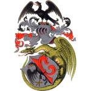

3992214 Hartvig Bryske

Född:
omkring 1361 Kragerup, Danmark.
Död:
efter 1408 Terlöse, Danmark.
Barn med
3992215 Kristine Nilsdotter Ulfeldt (Hak) (1350? - >1380)
Barn:
Kristine van Hufn Harvigsdatter Bryske til Kragerup (1381? - <1481)
Personhistoria
Årtal
Ålder
Händelse
1361?
Födelse omkring 1361 Kragerup, Danmark
>1380
Partnern
3992215 Kristine Nilsdotter Ulfeldt (Hak)
dör efter 1380 Terlöse, Danmark
1381?
Dottern
1996107 Kristine van Hufn Harvigsdatter Bryske til Kragerup
föds omkring 1381
[1]
>1408
Död efter 1408 Terlöse, Danmark
Källor
[1]
Johan Lindqvist